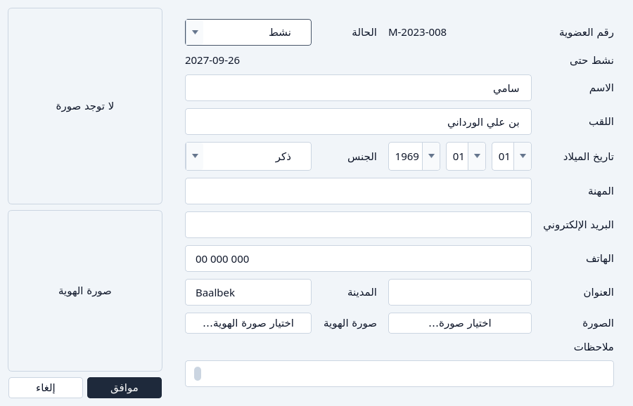

تسجيل عضو
تسجيل عضو، أو تجديد عضويته، أو إنهاؤها قبل موعدها.
التسجيل
اضغط إضافة عضو.
النافذة تعطي رقم عضوية. لا يمكنك كتابة رقم.
إضافة عضو، كما تُفتح. املأ الاسم وتاريخ الميلاد والباقي.
الاسم واللقب وتاريخ الميلاد مطلوبة. التاريخ يُختار من ثلاث قوائم: اليوم ثم الشهر ثم السنة. التطبيق يستخرج الفئة العمرية منه، ويضع نشط حتى بعد سنة ناقص يوم. الحالة تبدأ على نشط.
عضو جديد، والرقم والحالة وآخر يوم نشاط معلَّمة. - رقم العضوية — للقراءة فقط.
- الحالة
- نشط حتى
اضغط موافق.
إلغاء يترك النافذة.


التجديد
افتح العضو بـتعديل. الحالة تعرض غير نشط إذا مضى آخر يوم نشاط.
افتح الحالة واختر نشط.
قائمة الحالة لعضو غير نشط. نشط حتى ينتقل إلى سنة ناقص يوم. يتحدّث في النافذة قبل الحفظ، حتى ترى اليوم الذي ستخزّنه.

بعد اختيار نشط، آخر يوم نشاط تقدّم. اضغط موافق.


لإنهاء العضوية قبل موعدها، اختر غير نشط بدلاً من ذلك. نشط حتى يصبح أمس، ولا يستطيع العضو الاستعارة. انظر حالة العضو.
إذا تعذّر
- الاسم أو اللقب فارغ.
- تاريخ الميلاد ناقص، أو ليس تاريخاً صحيحاً، أو بعد اليوم.
- البريد الإلكتروني معبّأ وليس عنواناً صالحاً.